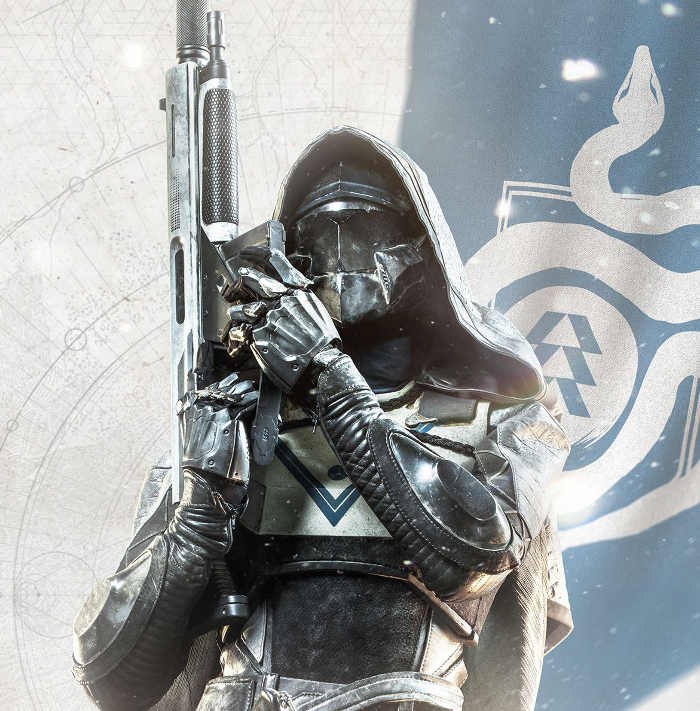

Beyond Light
HUNTER - REVENANT
BRING THE STORM
Revenants are a worthy ally in any battle. summon
the storm, use it for cover, lure enemies inside,
then unleash devastion!
Below are some in depth discription of the abilities
Silence & Squall
Channeling Stasis shards towards them, Revenants form Kama blades and use them to unleash a lethal two-pronged attack.
Withering Blade
The Revenant throws razor-sharp Stasis shurikens into the fray that ricochet off multiple enemies and surfaces, slowing and damaging them in the process.
Deadly Edge
Upon impact, the first blade shatters and sends out a wave of Stasis energy that freezes any enemies in the surrounding area. The second blade hits and creates a violent Stasis storm that hones in on nearby enemies; slowing, damaging, and eventually freezing them.